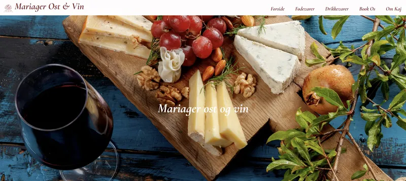

Tema 5 Grundlæggende indhold
Virksomhedsite - Mariager ost & vin
I det sidste tema skulle vi redesign en virksomheds hjemmeside i grupper og til denne opgave valgte vi mariager ost og vin.
I denne opgave implementerede vi en hero section og beskyttede vores side med adgangskode ved hjælp af javascript. For at arbejde sammen skulle vi bruge Git og lave branches, som var en udfordring at få til at virke.
Hvad har jeg lært?
Jeg har lært at lave en hero section på hjemmesider, beskytte sider med adgangskoder og arbejde i grupper i Git.
